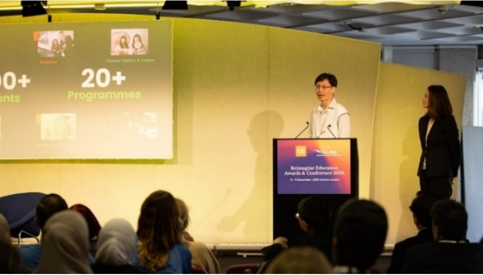
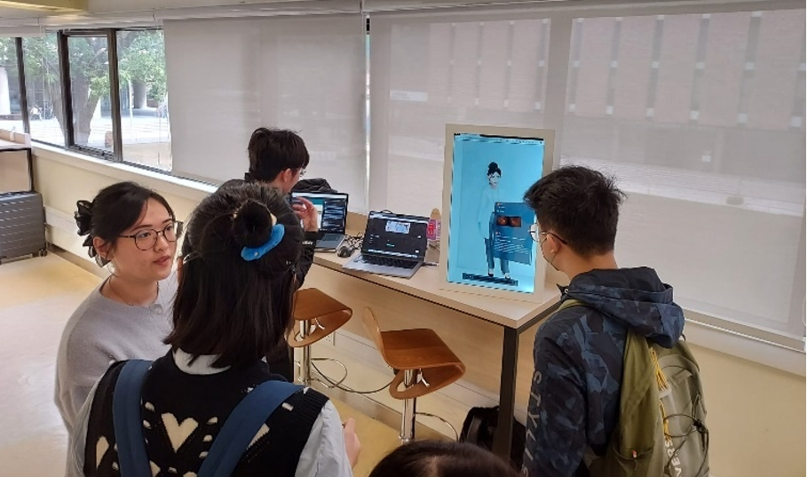
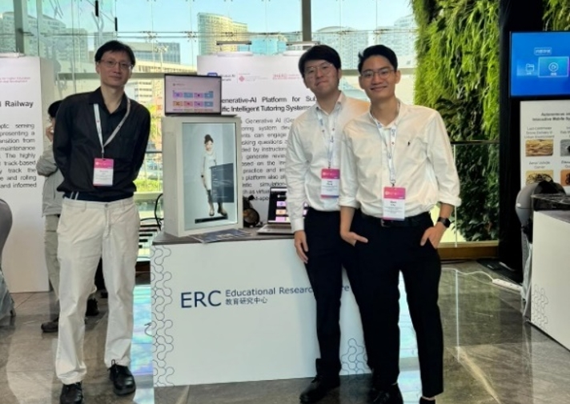

Project Impact
Measuring the Real-world Impact of the Project on Student Learning and Engagement
Our innovative GPTutor project was shortlisted for 2024 QS Reimagine Education Awards in the AI in Education category. Since then, we have made significant progress in enhancing the platform features, developing new simulation scenarios, promoting the platform both within and beyond PolyU, and adopting the platform for learning by students from diverse disciplines. In the past year, over 3,000 students from more than 20 departments and schools have used GPTutor to support their learning across 15+ courses.
Our Achievements:

Shortlisted for 2024 QS Reimagine Education Awards
In the past year, over 3,000 students from more than 20 departments and schools have used GPTutor to support their learning across 15+ courses.

User-Friendly and Effective
Our studies demonstrated a positive correlation between GPTutor usage and improved academic performance, with 95.8% of students finding the platform easy to use and 87.5% of students agreeing that it was useful for their learning.

Showcase at International Conferences
Our project was featured at various international conferences, including the Times Higher Education (THE) Global AI Forum 2024.
Activity Highlights
Video Recording of the Sharing Session
The project was showcased in the "Transformation of Higher Education in the AI Era: Innovation, Best Practices, and Impact" (AIHED) Symposium on 21 May. In the session "Learning and teaching show and tell: Showcasing exemplary use of GenAI in learning, teaching, and assessment practices by students and teachers from the eight UGC-funded universities in Hong Kong", we shared how we use the platform to create virtual patient simulation for the students in School of Optometry and a student from the School of Optometry also shared his learning experience with the platform in the course SO4009 General and Ocular Pharmacology.
Click to See the Event Highlights
Event Details
During the forum, students in the School of Optometry shared their experiences, highlighting how the virtual patient simulation in GPTutor brings clinical scenarios to life, boosts confidence, and offers a safe environment for practicing complex cases.
"Using GPTutor feels like having a patient right in front of me which really brings the clinical experience to life. It's helped me connect what I've learned in pharmacology and pathology to real cases, making the learning process more meaningful. As I am still in clinical placements, I find it very reassuring to practice with rare and tricky eye conditions that I might not see throughout my clinical rotations. GPTutor has definitely boosted my confidence and made me feel more prepared to care for real patients."
"Chatting with virtual patients is less stressful than being in the clinic because if I make a mistake, I can try again. I can also talk to the AI assistant to learn more about the conditions, so I feel better prepared when I encounter the same conditions in real patients."
Impacts of Experimental Learning
We have complemented online learning with experiential learning activities at the PolyU Industrial Centre for AI literacy education. These activities have reached over 1,600 students from more than 20 different programmes, including Occupational Therapy, Radiography, Physiotherapy, Computing & AI, Land Surveying & Geo-Informatics, Applied Social Sciences, Fashion & Textiles, Chinese History & Culture, Biotechnology & Chemical Technology, Food Safety & Technology, Hotel & Tourism Management, Building & Real Estate, among others.
For the experiential learning activities, our recent survey results show that 89% of the students agree/strongly agree that the experiential learning activity at PolyU IC is useful to help them better connect AI with their disciplines and future careers. From the students' reflection reports, the experiential learning activities enable the students to connect to their future careers.
Physiotherapy Student
"As a future physiotherapist, working in an elderly home is one of my career choices. With the incorporation of advanced technologies in smart elderly homes, I will need to learn how to interpret the data collected and use it as a reference for developing treatment plans. Moreover, it is essential for me to learn how to use the data ethically and to respect patient privacy, avoiding any exploitation of their personal information."
Radiography Student
"The demonstration of medical robots opened my eyes to how technology can transform patient care and the work environment for healthcare professionals. These experiences have motivated me to continue developing my skills and knowledge in radiography."
Applied Biology and Chemical Technology Student
"As a student in Applied Biology and Chemical Technology, I see strong potential for integrating AI and robotics into my field. The immersive VR setups and robotic demonstrations during the IC visit broadened my understanding of how these technologies can enhance lab safety, data analysis, and experimental accuracy."
Building and Real Estate Student
"As a student in the Building and Real Estate program, my visit to the smart elderly home provided valuable insights into the future of living spaces for seniors. It will inform my approach to designing environments that meet the needs of an aging population."
Occupational Therapy Student
"When working with elderly individuals or people with disabilities, robots can communicate with them and assist in their daily lives. They can also serve as companions, providing support and happiness, which is essential for my future practice in occupational therapy."
Social Sciences Student
"As a social science student, I believe the development of humanoid robots may change the way we interact with technology. My career aspiration is to work in the hospitality industry, and the insights from this visit have greatly inspired my future studies and career goals."
Publications
Richard Wing Cheung Lui, Haoran Bai, Aiden Wen Yi Zhang, and Elvin Tsun Him Chu, "GPTutor: A Generative AI-powered Intelligent Tutoring System to Support Interactive Learning with Knowledge-Grounded Question Answering," in 2024 International Conference on Advances in Electrical Engineering and Computer Applications (AEECA), pp. 702-707, IEEE, 2024.
Haoran Bai, Richard Wing Cheung, and Paul Vinod Khiatani, "Promoting Student Engagement with GPTutor: An Intelligent Tutoring System Powered by Generative AI," manuscript submitted for publication.